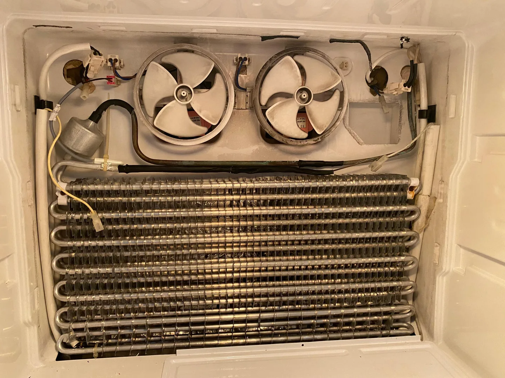
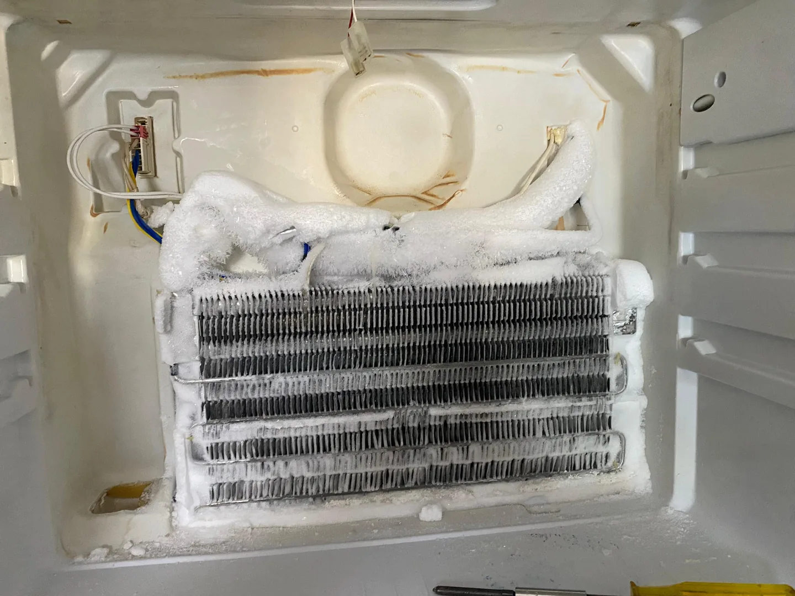

Yeterince soğutmuyor
Alt veya üst bölüm yeterince soğumuyorsa hangi bölümün etkilendiğini ve sorunun ne zamandır sürdüğünü paylaşın.
PENDİK · KURTKÖY · TUZLA · KARTAL
Soğutma sorunlarını ertelemeyin.
Profesyonel ustalarımızla buzdolabınız için bakım ve onarım desteği alın.
Marka-modeli ve arıza belirtisini paylaşın; servis için uygun zamanı birlikte belirleyelim.

CİHAZINIZA ÖZEL TEKNİK DESTEK
Belirtiyi, marka-modeli ve varsa hata kodunu paylaşın; servis talebinizi birlikte netleştirelim.
Alt veya üst bölüm yeterince soğumuyorsa hangi bölümün etkilendiğini ve sorunun ne zamandır sürdüğünü paylaşın.
Tekrarlayan karlanma ve buzlanma sorunlarında soğutma ve buz çözme sistemlerinin kontrolü.
Dolabın içinde veya altında su birikmesi durumunda tahliye ve bağlantıların değerlendirilmesi.
Fan, titreşim veya motor kaynaklı olabilecek seslerin ne zaman oluştuğunu bize anlatın.
Cihazın uzun süre durmadan çalışması veya istenen sıcaklığa ulaşamaması için teknik destek.
Marka-modeli ve görünen hata kodunu paylaşarak servis talebinizi oluşturabilirsiniz.
KENDİ ÇALIŞMALARIMIZDAN
Cihazınıza gösterdiğimiz özeni servis arşivimizden seçtiğimiz teknik fotoğraflarla inceleyin.

Fan ve soğutma aksamını gösteren gerçek servis fotoğrafı.

Servis incelemesi sırasında karşılaşılan buzlanma belirtisi.
ADIM ADIM SERVİS
Ne yapacağınızı bilerek, doğrudan ustanızla iletişim kurun.
Marka-modeli, arıza belirtisini ve bulunduğunuz mahalleyi paylaşın.
Servis uygunluğu ve ücretlendirme hakkında bilgi alarak zamanı netleştirin.
Teknik kontrolle sorun ve gerekli işlem hakkında bilgi alın.
Değişen parça ve 1 yıllık parça garantisi kapsamı hakkında bilgi alabilirsiniz.
PROFESYONEL İNCELEME
Kontrol sırası cihazın modeline ve belirtiye göre değişir. Önce sorunu netleştirir, gerekli işlemi ve bedelini onayınıza sunarız.
Bölmelerin sıcaklığı, kapak sızdırmazlığı ve fanların çalışması değerlendirilir. Belirtiye göre buz çözme sistemi ve soğutma devresi incelenir.
Ölçüm ve inceleme sonucuna göre seçenekleri açıklarız. Onarılabilirlik, parça temini ve maliyet birlikte değerlendirilir; onayınız olmadan işleme başlanmaz.
Bölmelerin soğutma davranışı ve kapakların kapanması kontrol edilir. Sıcaklığın dengelenmesi için gereken süre hakkında bilgi verilir.
Değiştirdiğimiz parçalar 1 yıl garantilidir. İşlemle ilgili sorunuz veya tekrar eden bir belirti varsa bizi arayın; durumu birlikte değerlendirelim.
Servisle görüşün →İŞİMİZİN ARKASINDAYIZ
Profesyonel ustalarımızın değiştirdiği parçalar için 1 yıl garanti sunuyoruz. Yapılacak işlem ve garanti kapsamı hakkında bilgi almak için bize ulaşın.
Dr. Beyaz Eşya Servisi bağımsız bir teknik servistir. Markaların yetkili servisi değiliz.
Garanti hakkında bize sorunAKLINIZDA SORU KALMASIN
Cihazınıza özel bilgi için bize doğrudan ulaşabilirsiniz.
Google’daki müşteri yorumlarımız ↗Değiştirdiğimiz parçalar için 1 yıl garanti sunuyoruz. Yapılacak işlem ve garanti kapsamı hakkında bilgi almak için bize ulaşabilirsiniz.
Marka-modeli, yaşadığınız sorunu ve bulunduğunuz mahalleyi telefonla veya WhatsApp üzerinden paylaşarak fiyat hakkında ön bilgi isteyebilirsiniz. Modeli bilmiyorsanız da arayabilirsiniz.
Evet. Buzdolabınızdaki sorunu anlatmak veya fiyat hakkında ücretsiz ön bilgi almak için arayabilirsiniz. Görüşmek için önceden servis randevusu oluşturmanız gerekmez.
Pendik ile birlikte Kurtköy, Tuzla ve Kartal için de servis desteği sunuyoruz. Mahallenizi ve arıza belirtisini paylaşarak adresiniz için servis uygunluğunu öğrenebilirsiniz.
Hangi bölümün soğutmadığını, sorunu ne zamandır fark ettiğinizi ve varsa ekrandaki hata kodunu anlatabilirsiniz. Marka-model bilgisi veya model etiketi fotoğrafı da değerlendirmeye yardımcı olur.
Hayır. Dr. Beyaz Eşya Servisi bağımsız bir teknik servistir. Marka adları yalnızca hizmet verilen cihazları belirtmek için kullanılır.
MÜŞTERİ DENEYİMLERİ
Google üzerinden paylaşılan, mevcut sitemizdeki müşteri deneyimlerinden seçmeler.
Buzdolabı tamiri için aynı gün 2 saat içinde geldiler. Çok temiz iş yaptılar. Başka tamircinin bize söylediği fiyatın neredeyse yarısına mal oldu. Temiz iş yaptıkları gibi kazıklamaya da çalışmadılar. Memnun kaldık.
Gerçekten çok memnun kaldım. Usta çok ilgili, güler yüzlü ve işinin ehli. Sorunumu anlattığımda hiç bekletmeden hemen gelip ilgilendi ve kısa sürede tamirini yaptı. İşini titizlikle yapan, güvenebileceğiniz bir usta.
YAKININIZDAYIZ
Pendik, Kurtköy, Tuzla ve Kartal için servis randevusu uygunluğunu öğrenin.
Orhangazi, Vatan Cd. No:15
Pendik / İstanbul
BİR TELEFON KADAR YAKIN
MARKAYA GÖRE SERVİS
Modelinizi ve belirtinizi paylaşın; bakım ve onarım uygunluğunu birlikte değerlendirelim.